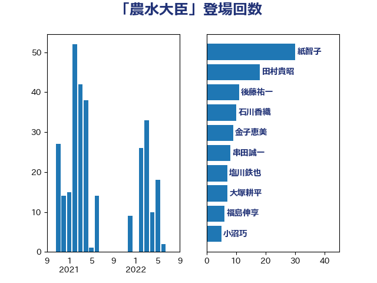

単語「農水大臣」

| 紙智子 | 日本共産党 | 30 回 |
| 田村貴昭 | 日本共産党 | 18 回 |
| 後藤祐一 | 立憲民主党 | 11 回 |
| 石川香織 | 立憲民主党 | 10 回 |
| 金子恵美 | 立憲民主党 | 9 回 |
| 串田誠一 | 日本維新の会 | 8 回 |
| 塩川鉄也 | 日本共産党 | 7 回 |
| 大塚耕平 | 国民民主党 | 7 回 |
| 福島伸享 | 無所属 | 6 回 |
| 小沼巧 | 立憲民主党 | 5 回 |
| 菅直人 | 立憲民主党 | 5 回 |
| 川田龍平 | 立憲民主党 | 4 回 |
| 玉木雄一郎 | 国民民主党 | 4 回 |
| 田名部匡代 | 立憲民主党 | 4 回 |
| 高橋光男 | 公明党 | 4 回 |
| 下野六太 | 公明党 | 3 回 |
| 大串博志 | 立憲民主党 | 3 回 |
| 大島敦 | 立憲民主党 | 3 回 |
| 岸田文雄 | 自由民主党 | 3 回 |
| 志位和夫 | 日本共産党 | 3 回 |
| 斎藤嘉隆 | 立憲民主党 | 3 回 |
| 石井苗子 | 日本維新の会 | 3 回 |
| 福山哲郎 | 立憲民主党 | 3 回 |
| 菅義偉 | 自由民主党 | 3 回 |
| 藤原崇 | 自由民主党 | 3 回 |
| 近藤和也 | 立憲民主党 | 3 回 |
| 古賀之士 | 立憲民主党 | 2 回 |
| 大西健介 | 立憲民主党 | 2 回 |
| 小宮山泰子 | 立憲民主党 | 2 回 |
| 山井和則 | 立憲民主党 | 2 回 |
| 山崎誠 | 立憲民主党 | 2 回 |
| 山本順三 | 自由民主党 | 2 回 |
| 山田俊男 | 自由民主党 | 2 回 |
| 末松信介 | 自由民主党 | 2 回 |
| 本村伸子 | 日本共産党 | 2 回 |
| 柚木道義 | 立憲民主党 | 2 回 |
| 柳ヶ瀬裕文 | 日本維新の会 | 2 回 |
| 浅田均 | 日本維新の会 | 2 回 |
| 稲津久 | 公明党 | 2 回 |
| 穀田恵二 | 日本共産党 | 2 回 |
| 竹内真二 | 公明党 | 2 回 |
| 舟山康江 | 国民民主党 | 2 回 |
| 谷合正明 | 公明党 | 2 回 |
| 赤嶺政賢 | 日本共産党 | 2 回 |
| 逢坂誠二 | 立憲民主党 | 2 回 |
| 重徳和彦 | 立憲民主党 | 2 回 |
| 勝部賢志 | 立憲民主党 | 1 回 |
| 古賀友一郎 | 自由民主党 | 1 回 |
| 吉田宣弘 | 公明党 | 1 回 |
| 城井崇 | 立憲民主党 | 1 回 |
| 塩田博昭 | 公明党 | 1 回 |
| 小池晃 | 日本共産党 | 1 回 |
| 小泉進次郎 | 自由民主党 | 1 回 |
| 小野泰輔 | 日本維新の会 | 1 回 |
| 山添拓 | 日本共産党 | 1 回 |
| 山田勝彦 | 立憲民主党 | 1 回 |
| 岩田和親 | 自由民主党 | 1 回 |
| 斎藤アレックス | 国民民主党 | 1 回 |
| 早坂敦 | 日本維新の会 | 1 回 |
| 林芳正 | 自由民主党 | 1 回 |
| 枝野幸男 | 立憲民主党 | 1 回 |
| 梅村みずほ | 日本維新の会 | 1 回 |
| 水岡俊一 | 立憲民主党 | 1 回 |
| 江藤拓 | 自由民主党 | 1 回 |
| 泉健太 | 立憲民主党 | 1 回 |
| 深澤陽一 | 自由民主党 | 1 回 |
| 清水貴之 | 日本維新の会 | 1 回 |
| 渡辺周 | 立憲民主党 | 1 回 |
| 石垣のりこ | 立憲民主党 | 1 回 |
| 礒崎哲史 | 国民民主党 | 1 回 |
| 秋野公造 | 公明党 | 1 回 |
| 竹内譲 | 公明党 | 1 回 |
| 篠原孝 | 立憲民主党 | 1 回 |
| 細田健一 | 自由民主党 | 1 回 |
| 自見はなこ | 自由民主党 | 1 回 |
| 芳賀道也 | 国民民主党 | 1 回 |
| 若宮健嗣 | 自由民主党 | 1 回 |
| 葉梨康弘 | 自由民主党 | 1 回 |
| 藤田文武 | 日本維新の会 | 1 回 |
| 谷田川元 | 立憲民主党 | 1 回 |
| 赤羽一嘉 | 公明党 | 1 回 |
| 近藤昭一 | 立憲民主党 | 1 回 |
| 鈴木俊一 | 自由民主党 | 1 回 |
| 長浜博行 | 無所属 | 1 回 |
| 階猛 | 立憲民主党 | 1 回 |
| 青柳陽一郎 | 立憲民主党 | 1 回 |
| 高木かおり | 日本維新の会 | 1 回 |
| 高鳥修一 | 自由民主党 | 1 回 |
| 鬼木誠 | 立憲民主党 | 1 回 |
| 齋藤健 | 自由民主党 | 1 回 |